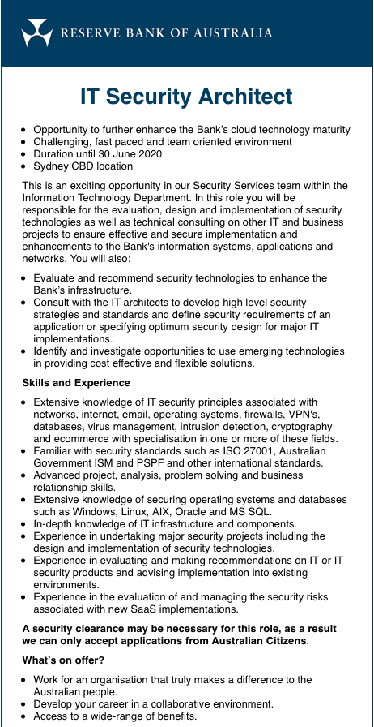

My name is Mathew Hughes and I am currently 28 working full-time as an Implementation coordinator. My student number is s3816641 and my email address is s381664[at]student.rmit.edu.au I am Sydney born and raised, only speak English and my highest level of education today is advanced diploma in network security. I have also studied a diploma in Networking as well also at Tafe NSW. An interesting fun fact is that for the last 3-4 years I have played Laser tag at a national level competing in a few Australasia national titles. I have since taken a step back to focus on work and completing this course.
I have always been interested in IT from around 15 when I was first exposed to a PC and the wide world web. I don’t think I have a defining person who sparked my interest, it was more I could explore IT on my own and it grew from there. I started building my own PCs from around 16 and I studied a couple of IT related classes in my later years of school.These included in year 11 and 12 I studied Information Processes technology and Tech drawing mostly on auto cad but with some photoshop and illustrator as well. I have had a few jobs in IT from working in a computer shop to installing computer hardware for the department of education. I then worked on a PC for a lift company programming information into lift displays and later left this job and left the industry for a bit. I then went to Tafe for 2 years to complete a cert IV/diploma in computer networking and then an advanced diploma in network security.
I got a job in my current company as tier 1 software support role handling 55% interface based and 45% technical knowledge issues on a dental practice management software and this software has been written to run on a Sybase’s SQL Anywhere platform. I have since then recently moved into the implementation department of the same company but am now far more technical based and pass of interface questions to training or support. I am still working at this company while starting my studies this semester. I found RMIT via OUA and decided online studies would best suit my desire to work and study. I have often wanted to go university but didn’t want to be a full-time student again so I hope this will work quite well.
I wish to gain perspective on all parts of the industry I haven’t yet explored like programming to see if this is where I can next progress post degree knowing all facets of IT in a broad sense.I have found a job I would ultimately aim for as a long-term career goal below
My interpretation of this job is that the RBA is on the cutting edge of technology with a rather large budget. Being a bank they need to be a technical fortress and this role is one of the ones that makes that happen. The main role in this job is to be responsible for the initial planing before moving to design and implementation. The applicant will have to evaluate emerging technologies and turn them into solutions. These will be projects that enhance the banks security using new technologies or could be redesigning exisiting systems or infrastructure to do it better. The other part of this job could also be to advise from an IT security aspect on projects that involve may be largely interface or something else but could lead to IT security issues. I myself love to sit on the cusp of new technology and like to often buy new gadgets beyond my budget. While I am keeping up to date with everything coming out I can also keep new enterprise technology in mind. I am also a very inquisitive and technical person benefiting me in this role as ill need to fully understand how it is planed to work technically before seeing security possible holes.
I my current roles allows me to work with other teams and I can relay technical issues to both technical and non technical teams.
The skills I believe are required are
My refection has been broken down into 3 sections
1. What do the results mean for me?
I have had a very similar result in two tests and feel they have captured me correctly as I will explain further below.
In this investigation I can see I am definitely a visual learner and this is no surprise to me as i thrive using this method. I understand IT has theoretical aspects but being more hands on I can see it suited for me. I often find it easiest to watch someone else something instead of just reading the theoretical instructions. I also find deep diving into a practical task self-exploring is also how I learn. I have learnt a lot of what I do at my current work via practical demonstrations and then further learn with practice or experimentation. I have found I find it hard to study with distractions such as background noise and am currently looking at ways to enhance my study methods like buying noise canceling headphones. I have taken the above results onboard and going to start trying visualising things that I hear or things that I read.
2. How do you think these results may influence your behaviour in a team?
The fact I can be turbulent instead of assertive is worrying to me as this may lead to conflict between me and other members by letting things boil up inside myself. I have been and will continue to work on enhancing communication in all aspects of my life. Being more observant than intuitive means I don’t think I am suited to being a leader in a group. I have always found I work better with someone giving me direction vs me giving them direction. I have had a little exposure but I can think of once where I trialed my managerial skills by being the captain of a laser tag team. I knew what I wanted done but often failed ti give the direction and support required to achieve good results.
3. How should you take this into account when forming a team?
When forming a team, I would ideally find people who are also visual learners as I think everyone would be able to relate to ideas presented the in the same way. When looking at the results from the personality test, I can see a few things that will help me excel in a team but also a few stumbling blocks.
Positives
I know how to prioritise things in my life and more importantly work for the team I have a relaxed personality, and this will benefit the team as I can keep during stressful situations and in turn this will keep others calm.Negatives
Unfortunately, I can be very stubborn and if I don’t agree with the team direction for example this would cause less productivity.I am also known to be Insensitive and come off as cold or direct. This to some might may be ideal approach but to others they might think I do not like them or don’t care for the project. With my personality type I can also be reserved and keep to myself and this may also cause tension with other members.
Anki vector is a small home robot that has is aimed as an autonomous desk companion. It can drive itself around call your name and respond to when you pet it. Vector goes to his charger and sleeps when alone and there is no way to remotely interact with by design to appeal to an average consumer, but I feel he can do more. Anki has released an SDK where you can code in python and I plan to add additional capabilities utilising Vector. I plan to allow my addition code to allow remote access to him over the web using his camera and wheels to move around the desk conducting surveillance of my home office office.I have a Vector since December 2018 as I received it for a Christmas gift. I have been exploring the SDK for possible new additions to benefit both me personally while also adding to the community. I think this would be a great place my coding endeavours as the hardware is already widely available and the base OS is already handling the low-level code. I think Python is also a great programming language to get started on and is very popular currently. There is also lots of widely available material on Python itself and Vector has a development forum as well.
This project functional will be broken down into two parts
1 - Configuring Vector with additional code
When setting up the Vector robot it is initially paired to a smart phone via Bluetooth. The user must sign with an Anki Account and in the background, this ties the unit to the account via the serial. The unit is now loosely tied to the app as it is required to change settings but all processing of commands itself is done on the device. The next set is setting up the SDK and this will require a Mac OS or windows PC. After installing the tools by command line, the user must log into web account as mentioned above. Now the PC and Vector are connected via the SDK additional code must be written and then uploaded to the Device. In this code it will allow for the additional remote functionality of this project and be broadcasting a pairing code to the portal configured in AWS below.
2 - Creating then hosting the online portal
I will need to create and host the website as it is the core graphical user interface for the project. This website will be hosted using an EC2 instance on AWS cloud. I plan for this to be available as a template and will not be hosting the server for other users due to cost concerns. To use this portal, you will have to create an account consisting of a username and password. On first login the portal account it will ask for the pairing code and when this is complete you will have paired the device to the new account credentials from the Anki servers to the AWS hosted portal. At the time of your login, the robot would be doing what it usually does sitting in the charger asleep but now with the additional code from section 1 it is awaiting to be awoken from the portal. The vector portal will have a home page explaining the project and this will also be the login screen. Once user logs in after initial config, they will see a drop down at the top with vector currently in use. The first paired vector is selected by default, but this would allow for multiple vector switching if required. On this main window the default screen would be showing a big initialise button to wake vector. After clicking this and when he is awake there will be a live camera feed and instructions below how to navigate him with the keyboard commands. There will as be a microphone button for if you want to relay text to him and via an API, he can convert this to speech.
Optionally functionality
There will be the record button present the user has configured a directory for motion decried recordings This medium will need to be hosted on a network attached storage device within the local area network where the vector is.
Skills required
16Personalities. (2019). Introduction | Virtuoso Personality (ISTP-A / ISTP-T) | 16Personalities. [online] Available at: https://www.16personalities.com/istp-personality [Accessed 6 Sep. 2019].
16Personalities. (2019). Introduction | Virtuoso Personality (ISTP-A / ISTP-T) | 16Personalities. [online] Available at: https://www.16personalities.com/istp-personality [Accessed 6 Sep. 2019].
16Personalities. (2019). Strengths & Weaknesses | Virtuoso Personality (ISTP-A / ISTP-T) | 16Personalities. [online] Available at: https://www.16personalities.com/istp-strengths-and-weaknesses [Accessed 7 Sep. 2019].
Humanmetrics.com. (2019). ISTP: Leverage Your Personality Type. [online] Available at: http://www.humanmetrics.com/personality/istp-type?EI=-28&SN=3&TF=19&JP=-22 [Accessed 7 Sep. 2019].
Educationplanner.org. (2019). What's Your Learning Style? The Results. [online] Avai
W3schools.com. (2019). HTML Unicode UTF-8. [online] Available at: https://www.w3schools.com/charsets/ref_utf_currency.asp [Accessed 11 Sep. 2019].
Schäferhoff, N. (2019). HTML Tutorial for Beginners 101 (Including HTML5 Tags) - WebsiteSetup. [online] websitesetup.org. Available at: https://websitesetup.org/html-tutorial-beginners/ [Accessed 11 Sep. 2019].